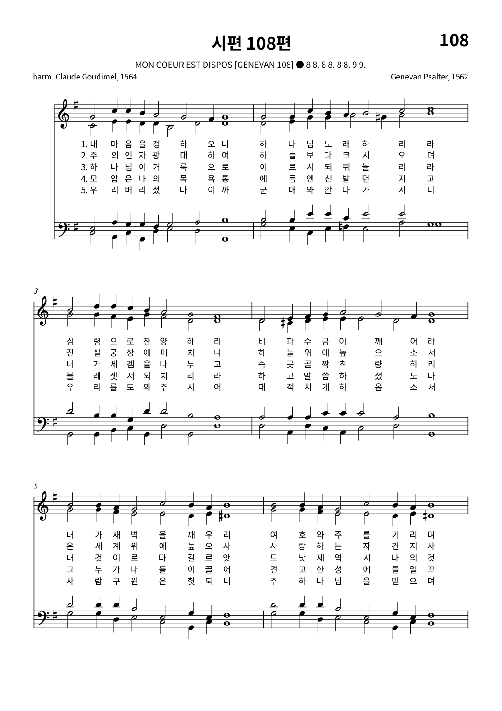

시편 108편
MON COEUR EST DISPOS [GENEVAN 108] · 8 8. 8 8. 8 8. 9 9.
곡조: Genevan Psalter, 1562 · 화성: Claude Goudimel, 1564 · 가사: 개역한글판 시편 108편 편역(AI 초벌 편역판 · 신학 감수 전) · 5절
악보 PDF MusicXML(출력용) MusicXML(반주용, 전주·반복 포함) 개역한글 시편 108편 읽기

가사
1절
내 마음을 정하오니
하나님 노래하리라
심령으로 찬양하리
비파 수금아 깨어라
내가 새벽을 깨우리
여호와 주를 기리며
만민 중에서 감사하고
열방 중에서 찬양하리
내 마음을 정하오니
하나님 노래하리라
심령으로 찬양하리
비파 수금아 깨어라
내가 새벽을 깨우리
여호와 주를 기리며
만민 중에서 감사하고
열방 중에서 찬양하리
2절
주의 인자 광대하여
하늘보다 크시오며
진실 궁창에 미치니
하늘 위에 높으소서
온 세계 위에 높으사
사랑하는 자 건지사
주 우리에게 응답하사
오른손으로 구하소서
주의 인자 광대하여
하늘보다 크시오며
진실 궁창에 미치니
하늘 위에 높으소서
온 세계 위에 높으사
사랑하는 자 건지사
주 우리에게 응답하사
오른손으로 구하소서
3절
하나님이 거룩으로
이르시되 뛰놀리라
내가 세겜을 나누고
숙곳 골짝 척량하리
내 것이로다 길르앗
므낫세 역시 나의 것
에브라임은 보호자요
유다는 나의 홀이로다
하나님이 거룩으로
이르시되 뛰놀리라
내가 세겜을 나누고
숙곳 골짝 척량하리
내 것이로다 길르앗
므낫세 역시 나의 것
에브라임은 보호자요
유다는 나의 홀이로다
4절
모압은 나의 목욕통
에돔엔 신발 던지고
블레셋서 외치리라
하고 말씀하셨도다
그 누가 나를 이끌어
견고한 성에 들일꼬
또 누가 나를 이끌어서
에돔 땅으로 인도할꼬
모압은 나의 목욕통
에돔엔 신발 던지고
블레셋서 외치리라
하고 말씀하셨도다
그 누가 나를 이끌어
견고한 성에 들일꼬
또 누가 나를 이끌어서
에돔 땅으로 인도할꼬
5절
우리 버리셨나이까
군대와 안 나가시니
우리를 도와주시어
대적 치게 하옵소서
사람 구원은 헛되니
주 하나님을 믿으며
우리 용감히 행하리니
저가 대적을 밟으시리
우리 버리셨나이까
군대와 안 나가시니
우리를 도와주시어
대적 치게 하옵소서
사람 구원은 헛되니
주 하나님을 믿으며
우리 용감히 행하리니
저가 대적을 밟으시리